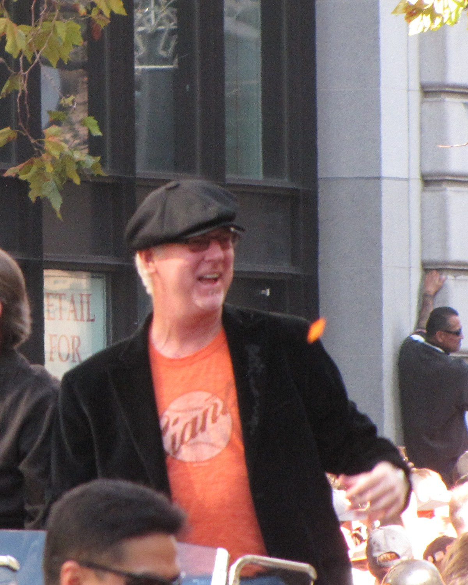
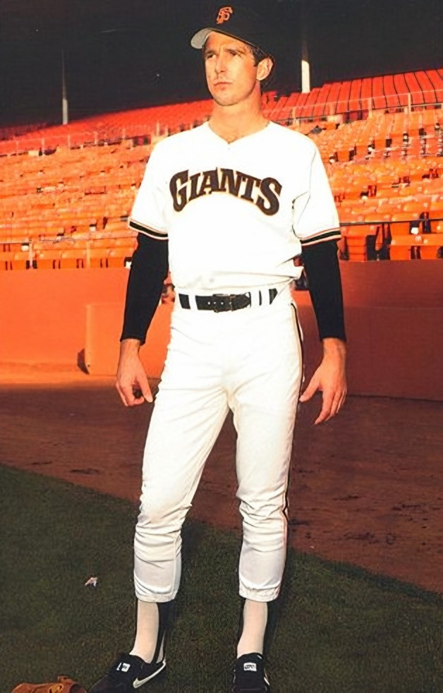
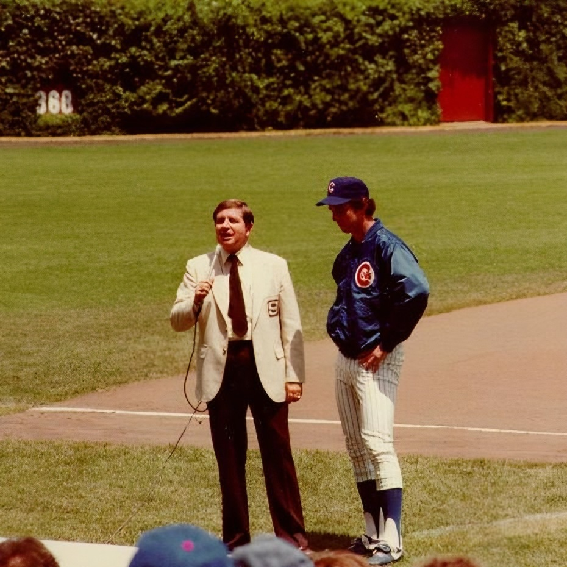
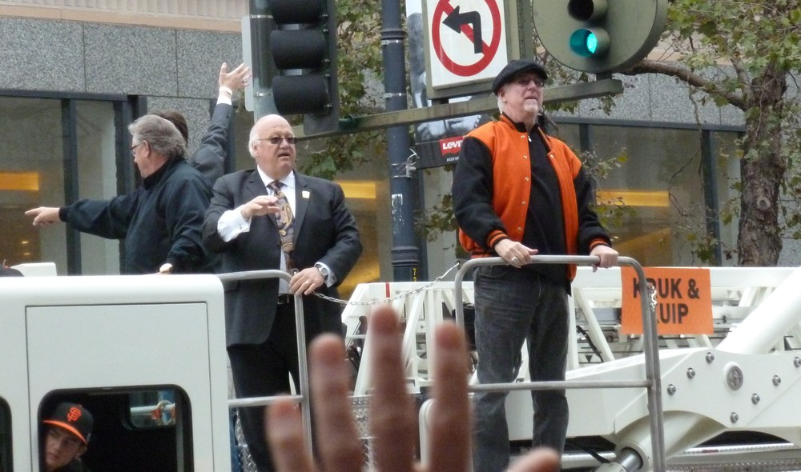
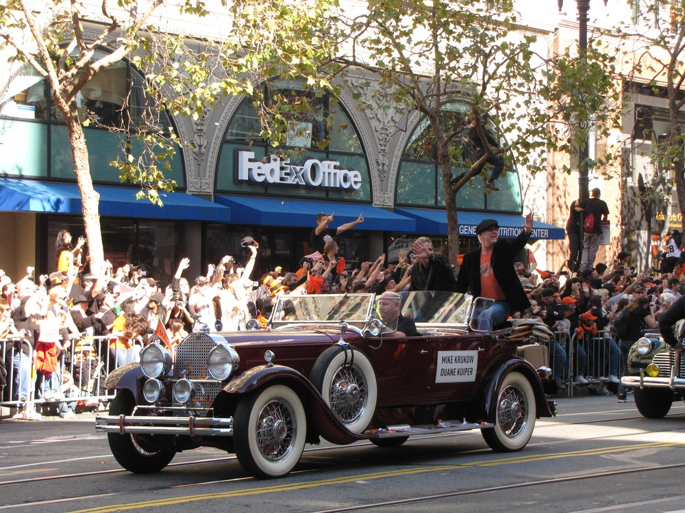
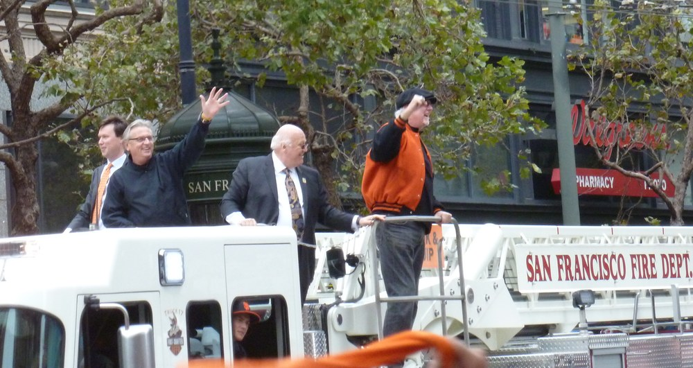

Mike Krukow
Twenty wins in orange and black, then 36 years in our living rooms telling hitters to grab some pine. Kruk was family.
The Mike Krukow Story
There's a version of every Giants summer since 1990 where you can hear one voice in the background. The TV in the kitchen, the radio in the car, a phone propped up on the grill. That voice belonged to Mike Krukow, and for 36 seasons he made a baseball game sound like the best hang in Northern California.
He was born January 21, 1952, in Long Beach and grew up in San Gabriel, where he played football, basketball and baseball at San Gabriel High. And yes, he grew up a Dodgers fan, going to games at Dodger Stadium with his dad. The California Angels took him as a catcher in the 32nd round in 1970, but he didn't sign. He went to Cal Poly in San Luis Obispo instead, turned into a pitcher, and still holds the school record with a 1.94 career ERA.
The Cubs drafted him in the eighth round in 1973 and he debuted at Wrigley on September 6, 1976. On his first day in the clubhouse, veteran catcher George Mitterwald walked over and said "Hey meat, welcome to the big leagues," and a famous broadcasting phrase was half born right there. He spent six seasons in Chicago, then went to the Phillies in a December 1981 trade and won 13 games with a 3.12 ERA in 1982.
On December 14, 1982, the Phillies sent him to San Francisco with Mark Davis and C.L. Penigar for Joe Morgan and Al Holland. He wore 39. That's also where he met a second baseman named Duane Kuiper. The two of them used to sit at the end of the dugout bench between Krukow's starts and do fake broadcasts to crack up their teammates, and it's hard to believe anybody in that dugout knew they were watching a rehearsal.
He was the best pitcher on the only 100 loss team the Giants have ever had, in 1985, and won the Willie Mac Award that year. Then 1986 happened. He went 20 and 9 with a 3.05 ERA, made the All Star team, finished third in the Cy Young voting behind Mike Scott and Fernando Valenzuela, and won the Willie Mac again. He was the first Giant to win 20 since Ron Bryant in 1973, and he got number 20 on the last day of the season at Dodger Stadium, the park he grew up in.
In 1987 the Giants won their first division title in 16 years, and in Game 4 of the NLCS against St. Louis he threw a complete game to beat the Cardinals 4 to 2. It was the only postseason game he ever pitched. Shoulder trouble wore him down after that, a rotator cuff surgery cut short his 1989 season, and he retired in March 1990 at 124 and 117 with a 3.90 ERA and 1,478 strikeouts over 14 seasons. He also hit five big league homers, which is four more than Kuiper, and you can bet that came up on the air.
Broadcasting started right away. He began as an occasional color analyst on KNBR in 1990 and went full time in 1994. Hank Greenwald pulled him aside a few weeks into it and warned him that if he did this, people would forget him as a player and remember him as a broadcaster. Greenwald was right, and Kruk never seemed to mind one bit.
Kruk and Kuip were the soundtrack to everything that came after. Bonds and the home run chase, the 2002 pennant, and then 2010, 2012 and 2014, three parades down Market Street with the two of them waving from the floats. The dugout talk they brought upstairs became a language the whole region speaks. Grab some pine, meat. In the squaaaaat. Ownage is ownage. Gamer Babes. Attababe. They even did their act on a popular baseball video game.
In July 2014 he went public with inclusion body myositis, a degenerative muscle disease. He'd first noticed it years earlier when his golf drive started shrinking, quietly feared it was ALS, and finally got the real diagnosis in 2011. He went from a cane to a cart to a motorized wheelchair. In 2017 he cut his schedule to about 120 games, and starting in 2020 NBC Sports Bay Area worked out a split setup so he could call road games from a studio in San Francisco while Kuiper traveled. He and his wife Jennifer, who have five kids, moved their offseason home from San Luis Obispo to Reno in 2014.
The awards piled up along the way. He's won 13 local Emmys, he was named California Sportscaster of the Year by the National Sports Media Association in 2015, 2017 and 2023, and he's on the Giants Wall of Fame, in the Bay Area Radio Hall of Fame, the Cal Poly Athletics Hall of Fame, and the National Polish American Sports Hall of Fame. He was a Ford C. Frick Award finalist in 2017, 2024 and 2025.
On August 6, 2026 he announced that 2026 would be his last season. The disease had made it unsafe to keep making the trip to the ballpark, and he'd told Kuiper and producer Jeff Kuiper over a pregame meal a couple weeks earlier that this was it. The next night Oracle Park gave him a long standing ovation in the second inning, and in September Kuiper revealed his own throat cancer diagnosis and stepped away for treatment, vowing he'd be back for Kruk's last game.
He was. On September 27, 2026, the Giants lost 5 to 1 to the Dodgers to finish 65 and 97, and nobody cared. The upper broadcast booth was renamed the Kruk and Kuip Broadcast Booth, Mayor Daniel Lurie gave the two of them the keys to the city, Buster Posey called him one of the greatest and most important Giants of all time, and Kruk closed by leading a sellout crowd in one more "We are the Giants! We are San Francisco!" He's retired now, at home in Reno, and Kuiper plans to keep calling games in 2027.
What He Meant to Us
I don't have a single memory of Giants baseball on TV that doesn't have his voice somewhere in it. That's not an exaggeration, I've tried. Candlestick nights, the Bonds years, the even year parades, the bad Augusts. Kruk was there for all of it, laughing at Kuip's jokes and telling some poor hitter to grab some pine.
What gets me is that he played here first. Twenty wins in 1986. He was the best pitcher on that awful 100 loss team in 1985, and two years later he was in the rotation when the Giants won the division. Most fans my age never saw him throw a pitch, and he never once leaned on it. He just used it to explain why a guy left a changeup up, and you'd believe him.
And him and Kuip. I've never heard two people on a broadcast who sounded more like they actually liked each other. When Kruk yelled "iiiiiit's outta here" for Drew Gilbert because his best friend was off getting cancer treatment, I laughed and then I had to sit there for a second. That was the whole partnership in one accidental home run call.
The disease part I still can't really talk about without getting worked up. He told us in 2014 and then just kept going. Twelve more seasons. A wheelchair, a studio miles from the field, and he never complained on the air once. A lot of those seasons weren't worth his time, honestly. He gave them his time anyway.
September 27 wasn't about a 5 to 1 loss to the Dodgers. It was about a sellout crowd that didn't want to leave. The booth has their names on it now, and that's how it should be. Next spring somebody new will sit next to Kuip and I'll probably get used to it by June. But every time a Dodger strikes out looking with the bases loaded, there's going to be a quiet spot where Kruk used to be.
Career Player Stats


| Year | Team | W | L | ERA | G | GS | CG | SHO | IP | H | ER | HR | BB | SO | WHIP |
|---|---|---|---|---|---|---|---|---|---|---|---|---|---|---|---|
| 1976 | CHC | 0 | 0 | 8.31 | 2 | 0 | 0 | 0 | 4.1 | 6 | 4 | 0 | 2 | 1 | 1.85 |
| 1977 | CHC | 8 | 14 | 4.40 | 34 | 33 | 1 | 1 | 172.0 | 195 | 84 | 16 | 61 | 106 | 1.49 |
| 1978 | CHC | 9 | 3 | 3.90 | 27 | 20 | 3 | 1 | 138.1 | 125 | 60 | 11 | 53 | 81 | 1.29 |
| 1979 | CHC | 9 | 9 | 4.21 | 28 | 28 | 0 | 0 | 164.2 | 172 | 77 | 13 | 81 | 119 | 1.54 |
| 1980 | CHC | 10 | 15 | 4.43 | 34 | 34 | 3 | 0 | 205.0 | 200 | 101 | 13 | 80 | 130 | 1.37 |
| 1981 | CHC | 9 | 9 | 3.68 | 25 | 25 | 2 | 1 | 144.1 | 146 | 59 | 11 | 55 | 101 | 1.39 |
| 1982 | PHI | 13 | 11 | 3.12 | 33 | 33 | 7 | 2 | 208.0 | 211 | 72 | 8 | 82 | 138 | 1.41 |
| 1983 | SF | 11 | 11 | 3.95 | 31 | 31 | 2 | 1 | 184.1 | 189 | 81 | 17 | 76 | 136 | 1.44 |
| 1984 | SF | 11 | 12 | 4.56 | 35 | 33 | 3 | 1 | 199.1 | 234 | 101 | 22 | 78 | 141 | 1.57 |
| 1985 | SF | 8 | 11 | 3.38 | 28 | 28 | 6 | 1 | 194.2 | 176 | 73 | 19 | 49 | 150 | 1.16 |
| 1986 | SF | 20 | 9 | 3.05 | 34 | 34 | 10 | 2 | 245.0 | 204 | 83 | 24 | 55 | 178 | 1.06 |
| 1987 | SF | 5 | 6 | 4.80 | 30 | 28 | 3 | 0 | 163.0 | 182 | 87 | 24 | 46 | 104 | 1.40 |
| 1988 | SF | 7 | 4 | 3.54 | 20 | 20 | 1 | 0 | 124.2 | 111 | 49 | 13 | 31 | 75 | 1.14 |
| 1989 | SF | 4 | 3 | 3.98 | 8 | 8 | 0 | 0 | 43.0 | 37 | 19 | 5 | 18 | 18 | 1.28 |
| Career | 124 | 117 | 3.90 | 369 | 355 | 41 | 10 | 2190.2 | 2188 | 950 | 196 | 767 | 1478 | 1.35 |
Postseason: one start, Game 4 of the 1987 NLCS, a complete game win over St. Louis, 4 to 2. Scroll the table sideways on a phone.
Postseason
| Year | Team | Series | G | W | L | IP | H | ER | BB | SO | ERA |
|---|---|---|---|---|---|---|---|---|---|---|---|
| 1987 | SF | NLCS Game 4 vs STL | 1 | 1 | 0 | 9.0 | 9 | 2 | 1 | 3 | 2.00 |
The Broadcast Career
- 1990
KNBR 680
Started as an occasional color analyst on Giants radio, a year after his last pitch.
- 1994
San Francisco Giants
Went full time in the Giants booth, right next to his old teammate Kuip.
- 2017
San Francisco Giants
Cut back to about 120 games a year as inclusion body myositis took its toll, with road trips only west of Denver.
- 2020
NBC Sports Bay Area
Started calling road games from a studio in San Francisco in the split broadcast setup, so he could keep doing what he loved without the travel.
- 2026
San Francisco Giants
Announced on August 6 that this was it, and signed off on September 27 against the Dodgers after 36 years in the booth.
In Pictures




The Signature Calls
Grab some pine, meat!
The strikeout call. It's a mashup of what Cubs third base coach Jack Bloomfield yelled at opposing strikeout victims and the "meat" George Mitterwald greeted him with as a rookie. He said it in his head on the mound for years, and once he got to the booth he could finally say it out loud.
In the squaaaaat
Every night when he went through the lineups and got to the catcher. It's a nightly salute to a late friend from Chicago who used to ask who was on the hill and who was in the squat.
Just another, ha ha ha ha, laugher!
Saved for one run games that took ten years off your life. Kuip called those torture. Kruk called them laughers.
I want to get that! I want to get that!
The giveaway promo line, borrowed from his son Wes, who used to yell it at Christmas commercials when he was three. Now the grandkids say it too.
Ownage is ownage
Straight out of the dugout. When a pitcher just owns a hitter, there's nothing else to say, and Giants fans use it about everything now.
Attababe
He dropped it into practically every broadcast, and he'll happily tell you he completely stole it from Kuiper. The Giants put Atta Babe, Kruk! on the right field wall for his last season.
Gamer Babes
Born on a freezing blowout night at Candlestick when the camera found a group of women dancing in the stands. He made them Gamer Babes from Half Moon Bay, and people still come up with shirts from Modesto, Vacaville and Yountville.
And there's a bolt, right field! And iiiiiit's outta here!
September 21, 2026, with Kuip away getting cancer treatment, Drew Gilbert homered before Kruk could hand off to Jon Miller, and he blurted out his partner's call. The sweetest accident of his final season.
Why We Love Him
Because he made us feel like we were in on it. Kruk always thanked fans for letting him sit at their dinner table every night, and that's exactly where he was. He didn't talk down to anybody. He talked like a guy who'd been on the mound, which he had, and he'd tell you why a 1 and 1 slider mattered in a way that made you feel smart for understanding it.
Because of Kuip. You can't love one without the other and nobody ever really tried. They were teammates in 1983, they did fake broadcasts at the end of the bench, and then they did real ones for 36 years and still sounded like they were cracking each other up in the dugout. When Kuiper was out with cancer in September 2026 and Drew Gilbert homered on the first pitch out of a commercial, Kruk panicked and yelled Kuip's home run call. Then he told Jon Miller he'd just stolen it from his partner. I can't think of a sweeter accident in Giants broadcasting history.
Because of the words. Grab some pine, meat. In the squaaaaat. Just another laugher after a one run nail biter. Gamer Babes on cold nights at Candlestick. Fans brought them to the park on signs and T shirts, and half of the Bay says attababe without remembering where it came from. Every one of those phrases came out of a real dugout or a real friendship, and he told us the stories behind them.
Because of how he handled the hard part. He had a disease that steals your strength a little at a time and he never once made the broadcast about himself. A cane, then a cart, then a wheelchair, then calling games from a studio miles from the field. He kept showing up for twelve more seasons after he told us, through some pretty grim baseball, and he still found something in every game to get excited about.
And because when it was finally time to go, he spent his goodbye thanking everybody else. Clubhouse guys, trainers, the TV truck, the writers, the fans. That's Kruk.
The Calls We'll Never Forget
- October 5, 1986
Win number 20, at Dodger Stadium of all places
Last day of the 1986 season, and the kid who grew up going to Dodgers games with his dad walked into Dodger Stadium needing one more win for 20. He went six and a third, gave up two earned runs, and the Giants won 11 to 2. He became the first Giant to win 20 since Ron Bryant in 1973, and he finished third in the Cy Young voting that winter.
- October 10, 1987
A complete game in the NLCS
Game 4 of the 1987 NLCS at Candlestick, the Giants down two games to one to the Cardinals. Krukow went all nine innings, allowing two runs on nine hits, and the Giants won 4 to 2 to even the series. It was the only postseason game of his career and it was a gem. The Cardinals took the series in seven, which still hurts, but that start is a big reason the 1987 club is remembered so fondly.
- November 3, 2010
Riding down Market Street with Kuip
Two days after the Giants won their first World Series in San Francisco, Kruk and Kuip rode down Market Street in a vintage convertible with both their names on the door, and the crowd went bananas. These guys had called a lot of bad baseball. Watching them get a parade felt like justice. They'd be back on a fire truck for another one two years later.
- June 13, 2012
Hearing the perfect game from across the street
This one's my favorite. Kruk wasn't even in the booth the night Matt Cain threw the first perfect game in Giants history. He'd driven up from San Luis Obispo after family matters, got to his King Street apartment near the ballpark around the third inning, poured a scotch, and watched on TV with his wife and the door wide open. On Gregor Blanco's diving catch and the final out from Joaquin Arias, he heard the roar from across the street before the TV caught up. He's called that night the North Star in the sky for the whole dynasty run.
- July 22, 2014
Telling us about the disease
In July 2014 he went public with inclusion body myositis. The Giants and his fellow broadcasters had known for a while, and he'd already been diagnosed in 2011 after years of quietly fearing it was ALS. He kept right on working, and he went on to call twelve more seasons. That October the Giants won their third title in five years, and he got another parade.
- August 7, 2026
The ovation that made him need a minute
The day after he announced 2026 would be his last season, the Giants put him up on the video board in the second inning against Detroit and Oracle Park stood and wouldn't sit down. One fan held a sign reading "Enjoy your retirement, meat!" Kruk came back on the air and said, "Wow. I've been saying that a lot the last day and a half. I need a minute. Jeez." Kuip told him he'd better get used to it.
- September 21, 2026
Stealing Kuip's home run call
Kuiper had just announced his throat cancer diagnosis and was away for treatment. The telecast was coming back for the bottom of the fifth against the Twins, and before Kruk could even toss it to Jon Miller, Drew Gilbert hit the first pitch over the wall in right. "And there's a bolt, right field! And iiiiiit's outta here!" Miller told him great call. Kruk said it was horrible, and that it was the only thing he could think of. "I just stole it from my partner."
- September 27, 2026
We are the Giants, one more time
The final broadcast. Kuiper was back, as he'd promised, after taping a pot bellied stick figure of himself next to the Atta Babe, Kruk! sign on the right field wall that morning. The booth was renamed the Kruk and Kuip Broadcast Booth, Christian Koss nearly gave him a go ahead homer in the eighth before replay called it foul, and the Giants lost 5 to 1. Then came the ceremony: Posey, Brenly, Will Clark, Kuiper, the keys to the city, his kids leading the crowd in The Parting Glass, and Kruk signing off with "We are the Giants! We are San Francisco! And we will never forget you!"
The Highlights
What They Said About Krukow
“Kruk and Kuip have a way of making Giants fans feel they're part of something bigger than a baseball game. You're one of the greatest and most important Giants of all time.”
“For decades, he has shared far more than his voice. He has been our spiritual leader.”
“I told people that when this was going to be reported, this would be, for our fans, as big a story as when they traded Willie Mays.”
“I envy Duane Kuiper for getting to work with Mike Krukow all these years. You've had the treat of nearly four decades of listening to the best broadcast booth in all of baseball.”
“He's a Bay Area legend. He's a Giants legend. Not having him call games for us anymore is going to be weird.”
“I don't want to quit, but I have to. It's just kind of where I'm at with dealing with this disease that I have.”
“We're in the Hall of Fame here in Northern California. It's not going to change my walk down the mall, or when I sit in a restaurant and somebody comes up to me and they'll tell me how much this team means to them.”
Mike Krukow: Fast Facts
What years was Mike Krukow with the San Francisco Giants?
Mike Krukow was with the San Francisco Giants from 1983 to 2026 in the broadcast booth.
What number did Mike Krukow wear?
Mike Krukow wore number 39 as a Giants player.
What are Mike Krukow's signature numbers?
36 seasons in the Giants booth, 1990 to 2026; 13 local Emmy Awards; 20 wins in 1986, an All Star year; 124 big league wins in 14 seasons.
What were Mike Krukow's biggest honors?
NL All Star (1986); Third in NL Cy Young voting (1986); Willie Mac Award (1985, 1986); San Francisco Giants Wall of Fame; 13 local Emmy Awards.
What are some of Krukow's biggest moments?
Win number 20, at Dodger Stadium of all places (October 5, 1986); A complete game in the NLCS (October 10, 1987); Riding down Market Street with Kuip (November 3, 2010). Every one is in the Calls We'll Never Forget section above.